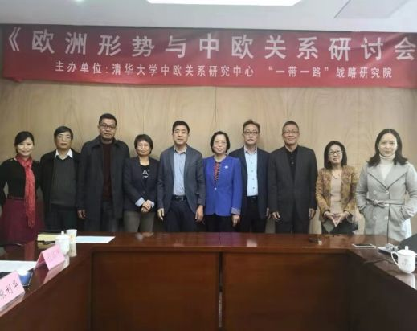
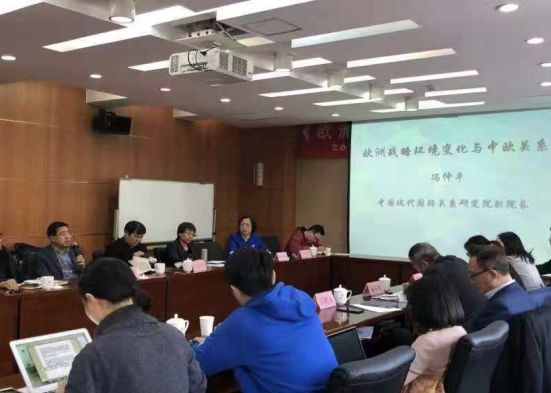

收录于合集

简 介
【作者简介】 王怡仙 清华大学国际关系学系硕士生
正文
2018年11月11日，清华大学中欧关系研究中心与“一带一路”战略研究院举办了“欧洲形势与中欧关系”研讨会。会议邀请中欧关系研究中心的特约研究员就目前欧洲的形势以及中欧关系进行了研讨。来自中国现代国际关系研究院、中国社会科学院欧洲所与国际合作局、北京大学马克思主义学院、中国人民大学国际关系学院与德国研究中心、清华大学国际关系学系、清华大学新闻传播学院等研究机构和高校的专家学者齐聚一堂，就当前欧洲的战略环境变化、欧盟在俄美关系中的平衡作用、欧洲的互联互通战略、多极化背景下的中欧关系、英法德三国对华政策的异同、中国对欧盟认知研究、德希关系以及德国左翼党的激进化走向等议题展开了发言和讨论。

清华大学中欧关系研究中心主任张利华教授和清华大学“一带一路”战略研究院执行院长史志钦教授分别主持了两个阶段的会议。
张利华教授在开幕辞中说，目前，欧洲面临的问题日益增多，有些问题愈发严重，难民潮、恐怖袭击、极左翼、极右翼民粹主义政党在欧洲崛起，欧洲面临着意识形态的大分裂，以匈牙利为首的中东欧国家与欧盟在接收难民问题上出现了严重的分歧，欧盟成员国的裂痕逐渐加深，英国脱欧给欧盟以重拳，使欧洲一体化雪上加霜，欧洲一体化遭受空前严峻的挑战。在这样的背景下，中国的“一带一路”项目推行于欧洲，在中东欧国家取得了进展，但在西欧、北欧国家面临不少的困难与挑战。在中美贸易摩擦的形势下，中国与欧盟的关系显得更加重要，也更加微妙。在这样的形势下，专家们聚集一堂，深入探讨欧洲问题及中欧关系问题，提出解决问题的建议，具有重要的积极意义。

希腊埃卡特利尼·拉斯卡瑞德斯（Aikaterini Laskaridis）基金会驻华代表葛凤艳女士致辞，她介绍了基金会的基本情况。拉斯卡瑞德斯基金会成立于20个世纪80年代，在希腊目前运营有3个图书馆，它所做的文化项目，主要以希腊文化交流为主，针对国内少年儿童学习希腊古典文化做了很多工作。在国际交流中，2015年拉斯卡瑞德斯基金会与清华大学社会科学学院签署了《中国- 希腊文化交流与合作项目协议》，主要是由基金会资助清华大学社科学院中欧关系研究中心从事中希文化交流和中欧文化交流方面的研究。中希两国都是具有悠久文化历史的国家，两国文化交流十分值得期待。
接下来是与会专家发言，其发言内容分为三个方面。
一、欧洲形势与中欧关系
中国现代国际关系研究院副院长冯仲平研究员就二战后欧洲战略环境变化对中欧关系的影响进行了分析。他说，二战结束之后，欧洲有两次重大的战略环境变化，分别为冷战开始和冷战结束时期。在冷战开始之时，欧洲采取了联美抗苏的战略，冷战的结构决定了中欧关系并不重要，并且是依附于中美关系的。而第二次战略环境的变化，即冷战结束苏联解体，对欧洲来说，一个全新的战略环境出现了。欧洲对美国的依赖事实上大幅减少，但保持了与美国的同盟关系。同时，欧盟重构了与俄罗斯的关系，加强了与亚洲关系。1995年欧盟发表了第一份对华战略报告，这是欧盟有史以来的第一个对华政策文件。中欧之间的合作主要集中在经贸合作领域，欧盟成为中国的第一大贸易伙伴。现如今，欧盟的战略环境正在发生第三次变化。一是体现在欧盟与俄罗斯的紧张关系上，这是乌克兰危机之后的结果；二是欧盟与美国的关系转变。尤其是特朗普上台之后，欧美伙伴关系受到了实质性损害。例如，以默克尔为代表的欧洲政治家认为美国靠不住，马克龙则认为欧洲在安全上依赖美国不合理，而容克在盟情咨文中则认为欧盟与美国的关系不正常，需要推动欧元与美元抗衡，提高欧元的国际地位。在这次欧洲战略环境变化之际，中欧关系也发生了相应的改变。由于欧美关系紧张，欧盟与中国在全球治理、维护多边贸易体系、维持国际体系等方面的合作机遇大大增加。当然，中欧关系面临的挑战也仍然很大，中欧之间的竞争在逐渐上升。
中国社会科学院国际合作局副局长田德文研究员围绕世界多极化背景下的中欧关系做了发言。他首先盘点并简略点评了2018年中欧之间的变化。第二次中欧合作峰会达成声明，2018年中欧旅游年，16+1和中国- 北欧、波罗的海国家次区域合作取得进展，中德贸易额延续增长势头。在这些背景下，中欧关系的发展前景是积极的。因为无论是中国还是欧盟，都比较务实。中欧之间的合作有很大的发展空间。不管是民粹党上台，还是极左上台，像希腊激进左翼党执政那么多年，跟中国关系也都保持良好。另外，在变化过程中，中国跟欧盟的次区域合作，会成为中欧关系深化发展的方向。不管是“16+1”，北欧波罗的海，甚至包括中英关系，都会深化发展。随着英国脱欧临近，一个特殊的中英关系，对于中欧关系的发展来说是很重要的一个方面。也就是说，中欧关系现在正处在一个结构性调整的过程当中，旧的过程比较松散，正在形成新的结构。中德关系仍然是中欧关系的基础，或者是中欧关系中最重要的伙伴关系。但是中德贸易最近这些年发生了很大的变化，双方的贸易平衡由中国长期的贸易顺差，现在变成德国对中国的贸易顺差。中德关系正在重构，这将对中欧贸易总体格局，乃至欧洲经济结构调整进程发挥重要影响。
清华大学国际关系学系副教授漆海霞从英法德三国在联合国投票异同的角度分析了21世纪以来英法德三国对华政策的异同。她认为，英法德等欧洲大国，既是美国的传统盟友，又与中国结为伙伴关系，这样的双重身份在中国与美国的矛盾升级中扮演着各自的角色。通过建立模型，分析英法德在联合国中的投票异同，发现，与中国建立伙伴关系的英法德更倾向于美国而不是中国。在英国和法国眼中，虽然中国是他们的伙伴，但他们在投票过程当中，支持美国的程度高于支持中国的程度。但是，德国有所不同。在2004年和2005年出现转折，默克尔上台后，德国与美国的投票差距增大，与中国的投票差距则减小。而在2008年和2009年，德国与美国的差距又高于与中国的差距。究其背后原因，在上述时间段，德国作为欧洲大国，有自主性的考虑，或者在欧盟中，德国想作为一个领袖国家。因此，在这种情况下，德国对欧洲地位的重视，一定程度上会超越于对美国的传统盟友关系。所以，在美国与中国之间，至少在美国与中国处于竞争状态的这个时间段，在德国领导人心目中，中国与美国是比较接近的竞争对手。
清华大学新闻与传播学院副教授张莉综合分析了目前学术界关于中国对欧盟认知的研究成果的现状并进行反思。她指出，这些研究成果有三方面的意义，一是对中欧关系研究的重要性，二是对欧洲研究的重要性，三是对传播学和公共外交研究的重要性。欧盟成立后，其内部共同的身份认同对增强欧洲的社会凝聚力有着重要意义，但是身份认同有自我与他我两方面的建构。在对外行动能力上，欧盟作为一个整体，其成员有共同的身份认同，对欧盟对外政策和话语的一致性也十分重要。关于中国对欧盟的认知研究，从对中英文文献及相关著作的检索后发现，认知研究相比中欧关系其他方面的研究比较少。这些认知研究使用了多种不同的研究方法，包括对各类细分受众的问卷调查、半结构化式访谈、焦点小组访谈、文本分析、和内容分析等。研究结果发现，中国的受访者对欧盟的认知有一些突出的概念，比如提起欧盟，首先想到的是足球、旅游和啤酒等与文化相关的概念。中国公众虽然对欧盟各类机构的了解比较少，但是对欧洲一体化的评价比较正面，而且认为欧盟在世界经济、环境问题和全球治理等领域都发挥了积极的作用。中国精英阶层对中欧关系的发展持谨慎乐观的态度。张莉在分析和对比不同的认知研究及其研究发现的基础上提出了对未来进一步研究的建议。
二、欧盟对外关系
中国人民大学国际关系学院教授房乐宪解读了欧盟关于欧亚互联互通战略及其含义。他指出，2018年9月，欧盟委员会和欧盟对外行动署联合发布的《链接欧洲亚洲：对欧亚联盟战略的基本设想》政策文件的提出有以下动机：第一，巨大的亚洲市场。亚洲的人口和经济增长使欧洲看到了发展机遇。第二，2018年欧亚互联互通，是欧盟亚欧政策的连续。第三，随着单边主义和贸易保护主义的抬头，欧盟认为需要与亚洲深化区域合作与交流，才能更好地应对各种危机。第四，中国近年通过“一带一路”项目和“16+1”的发展，在欧洲和“一带一路”沿线国家影响力的上升，引起了欧盟的高度关切。在这份文件中，欧盟所谓互联互通的战略有三大理念：一是互联互通的可持续性，指经济、财政、环境、社会四方面的可持续性。经济通过财政政策提供融资，在环境方面互联互通，要基于对环境状况的评估，继续发展低碳经济；在环境上，特别强调尊重高标准、严要求；社会领域，强调坚持透明度、良政等等。二是全面性。旨在确保四大领域流通，人员、商品、服务、资本的自由流通。官方文件里面明确强调几个实体方面，交通领域、数字领域、能源领域的联通。除此之外，还涉及到人文交流。三是互联互通要基于一定的规则。在以上三大理念的基础上，就政策框架而言，亦可分为三个层面。第一，建立强有力的联系。强有力的联系，是指基于从实体层面的交通、数字、能源，到人文层面，比如说强化奖学金项目、访学等等。第二，建立更可持续性的互联互通的伙伴关系。即双边层次、地区层次、更广泛的国际性的伙伴关系。就双边层次而言，欧盟强调自身是亚洲最重要的投资合作伙伴，未来欧亚可以开展第三方的投资与可持续联通对话，欧盟要发挥优势，强调通过技术援助的方式，向亚洲各国提供支持，提升亚洲的规划能力，并实施相关可持续互联互通项目，以及相关的政策支持以及政策对话。关于互联互通基本战略框架。欧盟意识到要建立一个更好的互联互通的机制，要动员相关资源，建立基础设施的规范模型和政策框架。第三，确保可持续性互联互通投资的数量和质量。包括欧盟将为互联互通提供新的创新型融资; 建立并维护国际金融伙伴关系; 建立公平的商业竞争环境。总之，此次欧盟推出的欧亚互联互通战略文件反映了欧盟对亚洲政策的新动向，某种意义上实际也是对中国"一带一路"倡议的回应，其相关理念及政策含义值得我们重视和思考。
清华大学国际关系学系吴大辉教授谈了乌克兰危机之后欧盟在俄美关系中平衡作用的弱化及其原因。他说，长期以来，欧盟在俄美关系中一直起着平衡作用。一方面，欧盟既防止俄美关系过于亲密，又防止俄美关系破裂给欧洲带来负面影响。欧盟与北约之间的功能差异，使得欧盟在俄美关系中有发挥平衡作用的空间。但另一方面，北约在一些紧急情况下，如乌克兰危机加剧的情况下，会将欧盟的作用遮蔽。因此，欧盟的平衡作用是不稳定的。近一年来，欧盟在俄美关系中的平衡作用逐渐弱化，有以下几个原因。第一，以俄罗斯为主的传统威胁上升成为欧洲的主要威胁。这是2014年之前没有过的，可能在东欧地区不会再有中立国家。像芬兰、瑞典等国，前不久也参加了北约举行的三叉戟演习，让美国的军事影响力进一步上升。在以俄罗斯为主的传统威胁上升为主要矛盾的情况之下，北约的主要成员国，也就是欧盟成员国，必须心无旁骛地对待俄罗斯威胁。也就是说，欧盟对美国为首的北约的依赖在上升，或者说欧盟的对俄政策被北约的对俄政策弱化了。第二，从克里米亚回归俄罗斯开始，欧盟追随美国，对俄罗斯进行了全面的经济制裁。第三，安全机制条约崩溃。在这个地区，安全机制建立依赖于一系列的条约，其中最核心的条约是《赫尔辛基总协定》。随着克里米亚并入俄罗斯，该总协定基本上被破坏了。2008年，俄罗斯退出《欧洲常规裁军条约》，另外，美俄均突破了《中导条约》。由于这些条约被越过，在欧洲，尤其是东部地区，稳定的机制失去了基础，地区紧张局势对俄欧关系，对欧美争端，又产生了进一步的叠加与绑架。第四，欧盟内部矛盾加剧。欧盟内部矛盾不是指脱欧问题，而是新老欧洲的问题。新欧洲更关心安全，老欧洲更关心发展。新欧洲关心的是来自俄罗斯的安全威胁，认为当代的普京外交是在沙俄、帝俄、苏俄外交的延长线上，随时可能会侵略他们。第五，欧美关系的异化。欧美在一系列问题上，如关税问题、预算问题、伊核问题、叙利亚问题等等都出现了矛盾。在今天的欧洲，英国和波兰作为老、新欧洲的代表，是唯二两个坚定不移支持美国的国家。现在欧盟难以影响美国的政策，也难以影响美国的对俄政策。
三、欧盟成员国动向
中国社会科学院欧洲研究所孔田平研究员就 “非自由民主”在匈牙利等中东欧国家的崛起谈了自己的看法。他说，“非自由民主”概念是扎卡利亚提出的。1997年扎卡利亚发表《非自由民主的兴起》一文。“非自由民主”是一种体制，在这一体制下政府通过民主选举上台，但上台后系统性地取消制衡。在政治上将“非自由民主”发扬光大的当属匈牙利总理欧尔班，他公开宣称在匈牙利建立“非自由的国家”。具体而言，匈牙利总理欧尔班从2010年到目前为止连续三届执政，至2018年，基本上每次都获得议会三分之二议席，欧尔班上台之后把匈牙利共和国国名中共和国去掉，改名为匈牙利。另外，他采取了一系列措施修改法律，限制独立机构，如宪法法院、媒体、中央银行、非政府组织等等。“非自由民主”为什么在中东欧崛起？孔田平研究员以匈牙利为例做了如下分析：首先，匈牙利的经济市场化转轨并没有带来社会的公平，导致一些社会阶层的边缘化。匈牙利过去是全球化程度非常高的一个国家，很多大的跨国公司都在匈牙利投资。匈牙利虽然曾是中东欧吸引外资最多的国家，但是，匈牙利的商业银行控股后来逐渐被外资所控制，包括制造业部门都被外资所控制。匈牙利转型过程中，保持了比较低的工资水平，导致国内的工人阶级抛弃社会党，转向中右的亲民盟。其次，匈牙利经济转轨后形成了二元经济结构即资本密集型的跨国公司与劳动密集型的本土企业。国内企业在全球化浪潮中备受挤压，本国企业家日益疏离社会党与自由派，转而支持右翼保守的青民盟。再次，匈牙利受到金融危机的严重冲击，民众对民主转型的支持率大幅度下降。最后，导致匈牙利向“非自由民主”转变还有中右翼政党的理念因素。比如说匈牙利总理欧尔班公开宣布转轨陷入失败。青民盟否定1989年开始的“后共产主义”转轨。青民盟从理念上一是反对自由民主，二是反对新自由主义的经济转轨模式，三是高度疑欧。在这样的情况下，才导致匈牙利转向“非自由民主”。2015年波兰法律与公正党执政后，波兰步匈牙利后尘。匈牙利和波兰转向非自由民主对欧洲一体化构成新的挑战。
北京大学马克思主义学院教授郇庆治谈了德国左翼社会民主党的激进化走向。郇庆治老师今年出席了在柏林举行的《纪念马克思诞辰200周年大会》，在这次大会上了解到德国左翼社会民主党的激进化走向。他说，在今年柏林召开的纪念马克思诞辰200周年的大会上，“新阶级政治”在整个讨论中占了极大的比重，甚至整个大会充满了阶级斗争话语的气息。这其中的新关键词是新阶级分析，德国左翼政治家强调重新引入和强化阶级意识在政治选举中的重要性，以赢得更多的选民信任与支持，推动对当代德国社会的结构性变革。需要强调的是，这不只是政治话语与言辞意义上的改变，而是要求左翼政治家重新走进广大的工人阶级与劳动者，聆听并反映、代表他们的利益关切与政治诉求，其中包括适当纠正左翼政治多年以来对女性主义与生态环境议题的偏爱。其中一个多次被提及的问题是：为什么德国左翼党清楚地知道现实中提出的政策改革倡议并没有触及问题实质，但却一直在回避提出更为根本性的政治变革要求？来自德国左翼党的联邦委员会、地方政府、工会的领导人的回应大都是，在现有体制下，只有具体性革新措施才是切实可行的。而在柏林市政府任职的左翼党成员甚至明确承认，无论是工会、左翼社会运动，还是左翼党，其实都是现行民主体制的一部分，而不是它的颠覆者。这个答复对于理解今天的左翼党非常重要。同时，即便德国左翼党真能重新引入阶级议题，是否能够带来选票的大幅提升，也充满了疑问。一个普遍性的理解与说法是：德国社会民主党仍然没有近期内实现政治复兴的希望。而且也没有任何迹象表明，他们会重新回到工人阶级或劳动者政治代表者的方向，因而德国左翼党的未来有诸多的不可测性。
中国人民大学德国研究中心研究员孟虹结合她今年夏天去希腊的调研及主持的国家社科基金重点项目，就“历史记忆与德希关系”作了专题发言。她指出，希腊在二战爆发后于1941年遭到德国的入侵，在三个方面遭受了惨重损失，其中有两个直接涉及到人员问题，一是无数希腊平民和当地犹太人受到迫害和屠杀；二是希腊人被迫为德国服务的所谓“强制劳工”问题；另一点也非常重要，且同样是目前德希之间存有争议的一个焦点，即当年希特勒当局要求希腊政府承担所谓的“占领贷款”，数量不小。
第二次世界大战后期，希腊于1944年至1949年发生内战。50年代，希腊与联邦德国的关系逐渐缓和扩展。1952年，双方宣布停止战争状况，德国的歌德学院亦在雅典开启工作；双方高层进行了较为频繁的互访：1954年，阿登纳访问雅典，并带去了5万马克赔偿款用于曾遭到德军屠杀的村庄的重建；1956年，德国联邦总统豪斯访问雅典，同年希腊国王保罗一世随后也到访波恩。此外，希腊和联邦德国先后加入了一些相同的国际和地方组织，如北约、欧洲经济共同体等。1967-1974年，希腊出现了军政府独裁统治。这一时期，联邦德国出于发展经济等原因，依然与希腊保持着良好的关系。此前在1960年，希腊与联邦德国签署了《客籍劳工协议》。1973年5月，希腊与民主德国也建立了外交关系。在法德支持下，希腊军政府于1974年被颠覆。此后，一直到两德统一和冷战结束前，德希关系不断得到加强和拓展。两德统一后至2008年欧债危机爆发前，两国关系的发展主要受到两大条约的影响。首先，1990年两德统一之后由原四大占领国与两个德国签署了所谓的《四加二》，这个《最终解决德国问题条约》取代了原计划的德希双边友好条约，战争赔偿问题被无形之中一笔勾销了；其次，欧盟有关处理难民问题的《都柏林协议》，给拥有最长海岸线的希腊带来了较大冲击，难民问题逐渐凸显，德希关系开始受到影响。尤其是2003年希腊境内发生森林火灾，部分德国媒体片面报道，加剧了德希关系的紧张。2008年欧债危机爆发之后，以默克尔为首的欧盟对希腊实施“紧缩政策”，希腊和德国关系变得更为紧张，关于二战的历史遗留问题的纠葛也再次出现。德国媒体对于希腊民众劳作习惯的片面报道以及对希腊政府“不作为”的报道，措辞不甚友好，也加剧了这种紧张关系。在希腊方面，历史记忆再次被唤起，主要表现在三个方面，一是有些希腊媒体开始将默克尔与希特勒相提并论，二是二战遭屠杀的村庄开始得到重视，并成为历史纪念场所；三是希腊政府正式提出二战期间希腊受辱损失的再次清算和赔款要求。在这种背景下，德国方面近年来做出了一定的努力，以缓和双方关系。一方面，联邦总统和联邦总理公开表示承担历史责任，向希腊人民谢罪，但同时也指出1960年已向希腊方面提供了11.5亿马克的一次性赔偿，赔偿问题已告结束；另一方面，德国方面积极投资创建德希青年合作项目和机构，促进新一代对于历史问题的认知和相互间的理解；此外，在欧债危机中，德国在欧盟框架下三次注入高额的“救助款”。总体来看，新时期德希关系中历史记忆元素的再度活跃，为双边关系的发展掀开了一个未能得到妥善了结的沉重历史篇章，也对战后德国的和解政策在新时期的发展提出了巨大挑战，其未来走向有待进一步观察。
在自由提问与讨论环节，与会的专家还就中东欧民粹主义、欧洲对中国“一带一路”倡议的态度等议题进行了深入讨论并交换了意见。研讨会在热烈祥和的气氛中圆满结束。
*点击左下角“ 阅读原文 ”获取原文pdf版
声明
此文为国政学人微信公众平台外文编译系列文章之一，由国政学人编辑首发，不代表本平台观点。欢迎学人转发分享，转载请务必注明来源。如有任何问题，请联系guozhengxueren@163.com
更多阅读
国政学人 （ID：guozhengxueren)
为方便学人及时阅读高质量文章
别忘把国政学人设置 星标 哦~